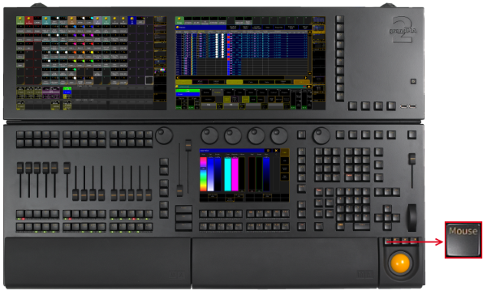

Mouse Key
The key Mouse is located in the left corner above the trackball.

Location key Mouse
The key Mouse toggles between the selected trackball sequences. To select the trackball sequence see User Settings.
If the key Mouse is:
- On – the trackball controls the mouse function.
- Blinking – the trackball controls pan and tilt for the selected fixtures or channels.
- Off – the trackball has no function.
- Off and the middle key above the trackball is on – the trackball functions as a dimmer wheel.